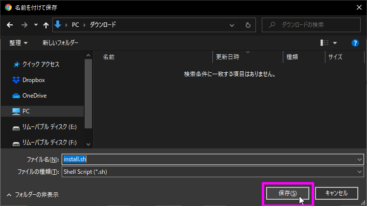

タンスの肥やしの中に N3510 ベアボーンPC が眠っていたので、何か有効活用が出来ないか調べていたところ Chrome OS がインストール出来るとのことだったので実際にやってみました。
初めに
Chrome OS（クローム・オーエス）とは？
Chrome OS（クローム・オーエス）とは、Linux をベースに Google が開発した OS（オペレーティングシステム）です。
Google Chrome ブラウザー に似たデザインで、主にウェブ閲覧とウェブアプリケーションを扱います。
また、Google Play がインストールされており Android アプリが動作することが他の Linux系 OS と違います。
必須条件
- Intel 系CPU を搭載している PC（UEFI をサポートしていることが必須）
- Nvidia グラフィックカード非搭載
タンスの肥やしになっていた N3510 アボーンPC がちょうど条件をクリアしていました。ラッキー
あと、インストールに 8GB 以上の USBメモリ が必要です。
準備
必要なものを揃えます。
Linux Mint MATE isoイメージ
Chrome OS をインストールするために一時的に使います。
上記サイトから「MATE」を選択し、
「EvoWise CDN」を選択するとダウンロードできます。
Rufus
Linux Mint を USBメモリ に入れる時に使います。
今回はインストールせずに使える Portable版 をダウンロードします。
Chrome OS recovery image
こちら から 公式のChrome OS リカバリイメージ をダウンロードします。
まず、上記サイトを開き Ctrl + Fキー で「rammus」を検索します。
そして、最新版のリカバリイメージをダウンロードします。現在の最新版は「83」だったので 83 クリックしてリカバリイメージをダウンロードしました。
また、AMD CPU の場合は「grunt」版をダウンロードすると動くかも知れません。
Intel CPU でも 第4世代以降は「rammus」で、第3世代以前は「samus」になります。
Brunch framework
公式のChrome OS リカバリイメージ を 汎用 Chrome OS に変換してくれます。超重要で今回の要です。
Chrome OS リカバリイメージと同じバージョンをダウンロードします。
今回は Chrome OS リカバリイメージ が「83」だったので「r83」をダウンロードしました。
Chrome OS インストール スクリプト
Linux コマンドを入力しないでも Chrome OS をインストール出来る スクリプト をダウンロードします。
「Raw」を右クリックし「名前を付けてリンク先を保存」を選択するとスクリプトを保存することが出来ます。

7-Zip
tar.gz形式 で圧縮されたファイルを展開する時に使います。
ダウンロードしてインストールまで済ませておきましょう。

Chrome OS をインストールする
インストール手順を簡単に説明します。
Linux Mint を起動し、そこから PC に Chrome OS をインストールします。HDD内のデータは全て削除されるので、必要なデータは移動させておきましょう。では、初めます。
インストール USB を作成
まず初めに インストール USB を作成します。
「Linux Mint」を書き込む
USBメモリ を PC に挿して Rufus を起動します。
「選択」ボタンを押してダウンロードしておいた「linuxmint-20-mate-64bit.iso」を選択します。次に「スタート」ボタンを押して USBメモリ に Linux Mint を書き込みます。
また、USBメモリ内のデータは全て削除されるので、必要なデータは移動させておきましょう。
いくつかのダイアログが出ますが、気にせず進めます。
書き込みが終わったら「閉じる」ボタンを押して Rufus を終了させます。
次に 今書き込んだ USBメモリ のフォルダを開いて、その中に「Chrome OS」という名前の新規フォルダを作ります。
で、その「Chrome OS」フォルダに必要なファイルを詰め込んで行きます。
「Chrome OS インストール スクリプト」を入れる
Chrome OS インストール スクリプト である「install.sh」ファイルを「Chrome OS」フォルダにコピーします。
「Brunch framework」を入れる
まず、ダウンロードしておいた「brunch_r83_k4.19_stable_20200708.tar.gz」を 7-Zip で展開します。
で、展開したフォルダ内にある「brunch_r83_k4.19_stable_20200708.tar」を再度 7-Zip で展開します。
展開して出てきたファイルを「Chrome OS」フォルダにコピーします。
「Chrome OS recovery image」を入れる
まず「chromeos_13020.87.0_rammus_recovery_stable-channel_mp-v2.bin.zip」を展開します。
展開して出てきた「chromeos_13020.87.0_rammus_recovery_stable-channel_mp-v2.bin」ファイルを「rammus_recovery.bin」にリネームします。
また別のリカバリーイメージをダウンロードした場合は、その名前にリネームして下さい。
リネームした「rammus_recovery.bin」ファイルを「Chrome OS」フォルダにコピーします。

これで インストール USB の作成は完了です。
「Chrome OS」フォルダ内に 6つのファイルがあれば OK です。

BIOS 設定を変更
次に、インストールする PC の BIOS の設定を変更します。
今回は N3510 ベアボーンPC を使って説明するので、設定出来る項目とかが若干違うかもしれませんが適材適所で臨機応変して下さい。
まず PC の電源を入れてすぐ Deleteキー か ESCキー を押しっぱなしにして BIOS 画面に入ります。
CSM Support を Disabled(無効) に変更する
左右キーで「Advanced」を選んで、上下キーで「CSM Configuration」を選んで エンターキーで 詳細設定をします。
「CSM Support」を「Disabled(無効)」に変更します。
もし CSM Support が Enabled(有効) から Disabled(無効) に変更出来ない場合は、下記項目を UEFI に変更すると CSM Support を Disabled(無効) に変更出来ます。
- Boot option filter → UEFI only
- Storage → UEFI
- Video → UEFI
- Other PCI Devices → UEFI
Secure Boot を Disabled(無効) に変更する
ESCキー を何回か押すと最初の画面まで戻ることが出来ます。
左右キーで「Security」を選んで、上下キーで「Secure Boot menu」を選んで エンターキーで 詳細設定をします。
「Secure Boot」を「Disabled(無効)」に変更します。
変更が終わったら 最初の画面まで戻ります。
「Save & Exit」を選んで「Save Changes and Exit」を選べば、設定が保存されて BIOS 画面が終了します。
Chrome OS をインストール
次に Chrome OS をインストール するため、USBメモリから Linux Mint を起動させます。
作成しておいた インストール USB を PC に挿して、電源を入れます。
USBメモリ から起動させるため F11キー を押しっぱなしにします。
一番上の「Start Linux Mint 20 MATE 64-bit」起動モードを選択した状態で エンタキー を押します。
しばらくすると Linux Mint が起動します。
Linux Mint が起動したら、右下のネットワークアイコンをクリックして Wi-Fi または イーサネット に接続します。
今回は、LANケーブル を接続してあったので自動的にネットワークと繋がりました。
その後、デスクトップの「Computer」をダブルクリックで開きます。
左の「File System」タブを選択してから「media」フォルダをダブルクリックで開きます。
次に「cdrom」フォルダをダブルクリックで開きます。
最後に「Chrome OS」フォルダをダブルクリックで開きます。
何も無いところを選択してから、右クリックで「Open in Terminal」を選択し ターミナル(端末) を開きます。

開いた ターミナル(端末) に下記コマンド を入力して エンタキー を押します。
1 | sudo sh install.sh |
そうすると必要なファイルを自動でダウンロードするので、しばらく待ちます。
ダウンロードが完了すると、インストールを続行するかどうか尋ねられます。
「yes」と入力し エンタキー を押すと、HDD が初期化されて Chorome OS がインストールされます。

しばらくまって「ChromeOS installed.」と表示されれば Chrome OS のインストールは完了です。
インストールが完了したら、左下隅にある Linux Mint のスタートメニューを開き「Quit」を選択します。
「Shut Down」を選択して PC の電源を切ります。
最後に USBメモリ を抜いてから エンタキー を押せば電源が切れます。
Chrome OS を起動
USBメモリ を抜いてから PC の電源を入れると、Chrome OS が起動します。
初回だけは起動に時間がかかります。
無事に起動したら、初回設定を進めて行きます。
左下の 言語設定 から 言語とキーボードの選択が出来ます。
後は Googleアカウント にログインしたり、プライバシーポリシーに同意したりして設定を進めて行けば、デスクトップ画面が表示されます。
Chrome OS なので もちろん Google Play も使えます。
以上で終了です。長々とお付き合い下さり、どうもありがとうございました。